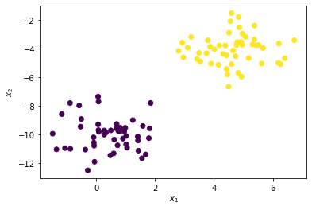
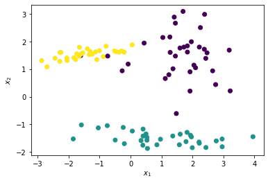
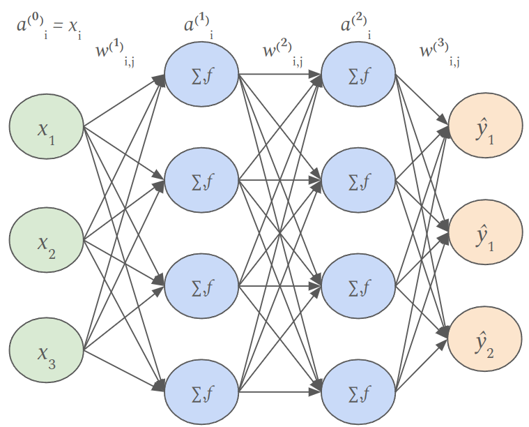

Fra perseptron til nevrale nettverk
Vi starter med en maskin fra 1957 som bare kan tegne én rett strek, ser nøyaktig hvor den kommer til kort (XOR), og bygger oss derfra opp til moderne nevrale nettverk med lag, aktiveringsfunksjoner og matriser.
Etter dette kapittelet skal du kunne
- forklare forskjellen på parametrisk og ikke-parametrisk modellering, og hvorfor vi vil ha ikke-lineære transformasjoner
- beskrive perseptronet (TLU med Heaviside), gjøre en oppdatering med Rosenblatts regel for hånd og forklare hvorfor Heaviside ikke kan trenes med gradient descent
- telle vekter og bias for et perseptron med flere klasser og for et helt nettverk
- lage NOT, AND og OR med ett perseptron, forklare hvorfor XOR krever to lag, og konstruere XOR av porter
- velge aktiveringsfunksjon (sigmoid, softmax, ReLU, lineær) i skjulte lag og output-lag, og forklare hvorfor ikke-linearitet er nødvendig
- skrive aktiveringen $a^{(l)}_j$ med indekser og på matriseform, sjekke dimensjoner og regne en forward pass
9.1Hvorfor trenger vi noe nytt?
All veiledet læring handler om å finne et estimat av target, $\hat y = f(x)$. Så langt har vi sett to helt ulike måter å modellere $f$ på:
- Lineær og logistisk regresjon (kapittel 2 og 6): Funksjonsformen er gitt på forhånd, for eksempel $\hat y = \sigma(w^\top x + b)$. Treningen går ut på å tilpasse parametrene. Dette er parametrisk modellering.
- Beslutningstrær (kapittel 5): Formen på $f$ er ikke gitt. Treningen bygger treet og velger splittkriterier som deler opp datarommet. Dette er ikke-parametrisk modellering.
Legg merke til hva modellene gjør med dataene. I regresjon multipliseres dataene med parametre og legges sammen. Det er en lineær transformasjon. I et beslutningstre flyter dataene gjennom modellen uten å transformeres: hver node splitter dataene, men endrer dem ikke.
Neste steg er modeller som gjør ikke-lineære transformasjoner av dataene, og som selv lærer hvilke transformasjoner som er nyttige. Det er det nevrale nettverk gjør.
Regresjon er en linjal: den kan bare tegne rette streker. Et tre er en sortermaskin: den legger ting i bokser, men endrer ikke tingene. Et nevralt nett er en deigkjevle: den kan strekke og bøye datarommet til problemet blir enkelt, og så bruke linjalen til slutt.
Hvilket utsagn beskriver forskjellen mellom en logistisk regresjonsmodell og et beslutningstre riktig?
- Begge er parametriske, men treet har flere parametre.
- Logistisk regresjon er ikke-parametrisk fordi sigmoid er ikke-lineær.
- Logistisk regresjon har en fast funksjonsform der vektene tilpasses (parametrisk), mens treet bygger formen på $f$ fra dataene (ikke-parametrisk).
- Treet transformerer dataene ikke-lineært i hver node, mens logistisk regresjon ikke transformerer dem.
9.2Perseptronet
Historien: en maskin, ikke et program
Perseptronet er forgjengeren til moderne nevrale nettverk. Idéen om en kunstig nervecelle som summerer signaler og «fyrer» over en terskel kom fra McCulloch og Pitts (1943). Den første implementasjonen ble bygget i hardware av Frank Rosenblatt (1957). Tanken var at perseptronet skulle være en maskin, ikke et program. Mark I-perseptronet hadde et kamera med 20×20 fotoceller som input, og vektene var fysiske potensiometre som ble skrudd på av elektriske motorer når maskinen lærte.
Det er verdt å dvele ved. I dag er et nevralt nett bare matrisemultiplikasjoner i et program, men grunnidéen er den samme: en maskin som justerer seg selv ut fra eksempler, i stedet for at noen programmerer reglene inn.
Threshold logic unit (TLU)
Et perseptron består av én eller flere beregningsenheter, kalt noder. I den opprinnelige formuleringen var nodene threshold logic units (TLU). En TLU tar en vektet sum av input og sender den gjennom en stegfunksjon:
Perseptron / TLU (likning 88 i notatene). $x$ og $w$ er vektorer i det generelle tilfellet.
$$f(x) = H(w^\top x + b) = H\Big(\sum_i w_i x_i + b\Big), \qquad H(z)=\begin{cases}1 & z\ge 0\\ 0 & z\lt 0\end{cases}$$$H$ er Heaviside-funksjonen (Heaviside step function). I vår sammenheng kalles den en aktiveringsfunksjon (activation function). Noden er enten aktiv (output 1) eller ikke aktiv (output 0). Hvilke $x$ som aktiverer noden, bestemmes av $(w,b)$. Siden output er binær, gjør perseptronet klassifisering, og for at det skal klassifisere godt må vektene læres fra data, altså veiledet læring.
I kode ser dette nesten likt ut som logistisk regresjon, bare med en hard terskel i stedet for sigmoid:
activation = sum(weight_i * x_i) + bias
prediction = 1.0 if activation >= 0.0 else 0.0Beslutningsgrensen er der $w^\top x + b = 0$. Med to features er det en rett linje, med tre features et plan, og generelt et hyperplan. Et perseptron kan derfor bare skille klasser som er lineært separerbare. Det har samme type grense som logistisk regresjon, men gir et hardt 0/1-svar i stedet for en sannsynlighet.
Problemet: Heaviside kan ikke deriveres
Vi vil gjerne trene perseptronet slik vi trente logistisk regresjon: send instansene gjennom én om gangen, beregn tapet og oppdater parametrene med gradient descent,
Gradient descent (likning 89 i notatene)
$$\theta_{t+1} = \theta_t - \eta\,\frac{\partial}{\partial\theta}L\big(f(x;\theta),\,y\big).$$Oppgave fra notatene: Hva er problemet med denne prosedyren når $f(x)=H(w^\top x+b)$? Hint: Hva skjer når du prøver å derivere tapsfunksjonen?
Gradienten forteller hvilken vei vi skal skru på vektene for å minke tapet. Hvis en liten endring i $w$ ikke endrer output i det hele tatt, fordi vi er på et flatt platå i stegfunksjonen, sier gradienten «ingen retning er bedre enn en annen». Modellen står bom stille, selv om den tar feil.
«Hvilken egenskap ved Heaviside-funksjonen gjør den uegnet for gradientbasert optimalisering?» Riktig svar: Den er ikke deriverbar overalt, og har samtidig derivert null nesten overalt. Begge delene teller: hoppet gjør den uderiverbar i 0, og platåene gir null gradient ellers.
En kollega vil trene et perseptron med Heaviside-aktivering med vanlig gradient descent. Hva er det egentlige problemet?
- Heaviside gir output utenfor $[0,1]$, så tapet blir negativt.
- Heaviside er ikke-lineær, og gradient descent virker bare for lineære funksjoner.
- Heaviside har derivert lik 1 overalt, så alle vekter oppdateres like mye.
- Den deriverte er 0 overalt der den er definert og udefinert i 0, så gradienten gir ikke noe læringssignal.
Rosenblatts løsning: dropp den deriverte
I Rosenblatts opprinnelige formulering er leddet med den deriverte rett og slett utelatt. Oppdateringsregelen blir
Perseptronregelen (Rosenblatt). Notatene skriver likning 90 uten $x_i$, men koden rett under har med $x$, og det er den riktige formen.
$$w_i \leftarrow w_i + \eta\,(y - \hat y)\,x_i, \qquad b \leftarrow b + \eta\,(y-\hat y)$$Se hva leddet $(y-\hat y)$ gjør. Siden både $y$ og $\hat y$ er 0 eller 1, kan det bare ha tre verdier:
| $y$ | $\hat y$ | $y-\hat y$ | Hva skjer |
|---|---|---|---|
| 1 | 1 | 0 | Riktig. Ingen endring. |
| 0 | 0 | 0 | Riktig. Ingen endring. |
| 1 | 0 | +1 | For lav: $w \leftarrow w + \eta x$, så $w^\top x$ øker neste gang. |
| 0 | 1 | −1 | For høy: $w \leftarrow w - \eta x$, så $w^\top x$ synker neste gang. |
Perseptronet lærer bare av feil. Gjetter det riktig, rører det ikke vektene. Gjetter det for lavt, dytter det vektene mot punktet. Gjetter det for høyt, dytter det dem bort fra punktet.
Bias-trikset. I kode er det vanlig å utvide $x$ med et første element $x_0 = 1$, og la $w_0$ spille rollen som $b$. Da blir $w^\top x + b = \sum_{i=0}^n w_i x_i$, og bias oppdateres med samme regel som de andre vektene (fordi $x_0=1$):
w = w + learning_rate * (expected - predicted) * x # x = [1, x1, x2, ...]Hele treningsprosessen er som før. Vi sender instansene gjennom én om gangen, og etter hver instans oppdateres parametrene. Én runde gjennom alle treningsinstansene er én epoke (epoch), og vi kjører gjerne mange epoker.
Regneeksempel: én oppdatering for hånd
Gitt $w = (0.5,\,-1)$, $b = 0$, $\eta = 0.1$ og datapunktet $x = (1,\,2)$ med $y = 1$.
1. Forward: $z = 0.5\cdot 1 + (-1)\cdot 2 + 0 = -1.5$. Siden $z \lt 0$ blir $\hat y = H(-1.5) = 0$.
2. Feil: $y - \hat y = 1 - 0 = 1$. Modellen gjettet for lavt.
3. Oppdater:
$w_1 \leftarrow 0.5 + 0.1\cdot 1\cdot 1 = 0.6$
$w_2 \leftarrow -1 + 0.1\cdot 1\cdot 2 = -0.8$
$b \leftarrow 0 + 0.1\cdot 1 = 0.1$
4. Sjekk: Nå er $z = 0.6 - 1.6 + 0.1 = -0.9$. Fortsatt negativ, så punktet er fortsatt feilklassifisert, men $z$ har gått fra $-1.5$ til $-0.9$, altså i riktig retning. Perseptronet trenger noen flere runder.
Generelt øker $z$ med $\eta\,(\lVert x\rVert^2 + 1) = 0.1\cdot(1+4+1) = 0.6$ etter en slik oppdatering, der $+1$ kommer fra bias.
Et perseptron har $w=(1,\,0.2)$, $b=-0.5$ og $\eta = 0.2$. Det får punktet $x = (2,\,-1)$ med $y=0$. Hva blir $w_2$ etter oppdateringen?
Samme perseptron, $w=(1,\,0.2)$, $b=-0.5$, $\eta=0.2$, får nå punktet $x=(1,\,1)$ med $y=1$. Hvor mye endres $b$?
Hvorfor utvider vi ofte $x$ med et ekstra element $x_0 = 1$ i implementasjonen av et perseptron?
- Da kan bias $b$ behandles som en vanlig vekt $w_0$, og hele oppdateringen skrives som én vektoroperasjon.
- For å unngå at $z$ blir nøyaktig 0, der Heaviside er udefinert.
- For å normalisere input slik at alle features har samme skala.
- Fordi perseptronet trenger minst én konstant feature for å kunne lære ikke-lineære grenser.
Hva du bør legge merke til: Linjen flytter seg bare når et punkt er feilklassifisert, og den hopper alltid i retning av å få akkurat det punktet riktig. På separerbare data blir det etter noen epoker en epoke med null feil, og da stopper læringen helt. Bytt til XOR-mønsteret: Linjen vandrer evig, og antall feil per epoke går aldri til null. Det finnes ingen rett linje som skiller klassene, og det er temaet i seksjon 9.4.
Fordypning: perseptronets konvergensteorem ikke nødvendig til eksamen
Rosenblatt viste at hvis dataene er lineært separerbare, finner perseptronregelen en skillende linje etter et endelig antall oppdateringer. Er de ikke separerbare, konvergerer regelen aldri, og vektene fortsetter å svinge. Dette er grunnen til at du ser vandringen i XOR-varianten over.
Perseptron i scikit-learn
from sklearn.linear_model import Perceptron
perceptron = Perceptron().fit(X_train, y_train)
y_pred = perceptron.predict(X_test)
ws = perceptron.coef_ # vektene
bs = perceptron.intercept_ # biasPerceptron er en wrapper rundt SGDClassifier med loss="perceptron" og learning_rate="constant". Vi henter ut parametrene på samme måte som for lineær regresjon.

make_blobs (figur 19a i notatene). Her finnes det mange rette linjer som skiller klassene perfekt, så et perseptron vil lykkes.9.3Flere klasser: fra vektvektor til vektmatrise

make_classification (figur 19b i notatene).Oppgave fra notatene: Hvor mange features og klasser har dataene i figur 9.3? Hvor mange vekter trenger et perseptron for å tilpasse dem? Tegn gjerne en figur før du ser svaret.
coef_.shape = (3, 2) (klasser × features) og intercept_.shape = (3,).Med flere klasser har vi én output-node per klasse, og hver node har sine egne vekter. Vektene blir en matrise $w_{i,j}$, og oppdateringsregelen gjelder for hvert element:
Perseptronregelen med flere klasser (likning 91 i notatene)
$$w_{i,j} \leftarrow w_{i,j} + \eta\,(y_j - \hat y_j)\,x_i$$- $w_{i,j}$ er vekten på forbindelsen mellom input $i$ og output-node $j$,
- $\eta$ er læringsraten,
- $\hat y_j$ og $y_j$ er output og target for klasse $j$ (target er one-hot: 1 for riktig klasse, 0 ellers),
- $x_i$ er feature $i$ for det aktuelle datapunktet.
print("Features:", X.shape[1]) # 2
print("Classes:", len(set(y))) # 3
print("Weights:", perceptron.coef_.shape) # (3, 2)
print("Biases:", perceptron.intercept_.shape) # (3,)Du trener Perceptron() fra sklearn på et datasett med 4 features og 5 klasser. Hvor mange parametre har modellen, og hva er coef_.shape?
- 9 parametre,
coef_.shape = (4, 5) - 20 parametre,
coef_.shape = (4, 5) - 25 parametre,
coef_.shape = (5, 4) - 24 parametre,
coef_.shape = (5, 4)
coef_ som (klasser, features) = (5, 4). Forvekslingen (4, 5) er fristende, og 20 er svaret hvis man glemmer bias. 9 kommer av å legge sammen 4 + 5 i stedet for å gange.9.4Logiske porter og XOR-problemet
Med riktig valg av vekter kan et perseptron utføre logiske operasjoner. Input er 0 (usann) eller 1 (sann), og output er $H(w^\top x + b)$.
| Port | Vekter | Regel | Intuisjon |
|---|---|---|---|
| NOT | $(w_1, b) = (-1,\ 0.5)$ | $H(-x_1 + 0.5)$ | positiv bare når $x_1 = 0$ |
| AND | $(w_1, w_2, b) = (1,\ 1,\ -1.5)$ | $H(x_1 + x_2 - 1.5)$ | summen må være 2 for å komme over 1.5 |
| OR | $(w_1, w_2, b) = (1,\ 1,\ -0.5)$ | $H(x_1 + x_2 - 0.5)$ | det holder at summen er 1 |
Legg merke til at AND og OR har samme vekter. Bare biasen er forskjellig. Biasen er terskelen: hvor mange input som må være «på» før noden fyrer. I figuren ser du dette som at linjen forskyves parallelt.
Sjekk AND for alle fire input
| $x_1$ | $x_2$ | $z = x_1 + x_2 - 1.5$ | $H(z)$ |
|---|---|---|---|
| 0 | 0 | −1.5 | 0 |
| 0 | 1 | −0.5 | 0 |
| 1 | 0 | −0.5 | 0 |
| 1 | 1 | 0.5 | 1 |
Bare $(1,1)$ gir positiv $z$. For OR med $b = -0.5$ blir $z$ lik $-0.5, 0.5, 0.5, 1.5$, så tre av fire gir 1.
Et perseptron har vektene $(w_1, w_2, b) = (-1,\,-1,\,1.5)$. Hvilken logisk port er dette?
- NOR (sann bare når begge er 0)
- OR
- NAND (usann bare når begge er 1)
- XOR
NOT-perseptronet har $(w_1, b) = (-1,\,0.5)$. Hva er $z$ når $x_1 = 1$?
Prøv dette: Lag AND, OR, NAND og NOR. Det går raskt. Velg så XOR og prøv så lenge du vil. Du kommer aldri over 3 av 4, fordi de to «sanne» hjørnene $(0,1)$ og $(1,0)$ ligger på hver sin diagonal i forhold til de to «usanne» $(0,0)$ og $(1,1)$. Ingen rett linje kan ha begge blå på én side og begge oransje på den andre.
XOR er ikke lineært separerbart
XOR («eksklusiv eller») er sann når nøyaktig én av input er sann:
| $x_1$ | $x_2$ | XOR |
|---|---|---|
| 0 | 0 | 0 |
| 0 | 1 | 1 |
| 1 | 0 | 1 |
| 1 | 1 | 0 |
Bevis på at ingen $(w_1,w_2,b)$ fungerer
Anta at et perseptron klarer XOR. Da må
- $(0,0) \to 0$: $\;b \lt 0$
- $(0,1) \to 1$: $\;w_2 + b \ge 0$
- $(1,0) \to 1$: $\;w_1 + b \ge 0$
- $(1,1) \to 0$: $\;w_1 + w_2 + b \lt 0$
Legg sammen ulikhet 2 og 3: $w_1 + w_2 + 2b \ge 0$, altså $w_1 + w_2 + b \ge -b$. Siden $b \lt 0$ er $-b \gt 0$, så $w_1 + w_2 + b \gt 0$. Det motsier ulikhet 4. Altså finnes det ingen slike vekter.
Eksamen viste nøyaktig sannhetstabellen over og spurte: «Hvorfor kan ikke et enkelt perceptron lære denne sammenhengen?» Riktig svar: Fordi XOR-mønsteret ikke er lineært separerbart. Distraktorene var at perseptroner trenger flere enn to features, kontinuerlige labels eller bias lik null. Alle er tull, men høres tekniske ut.
Hvorfor kan ikke ett enkelt perseptron (én TLU) lære XOR?
- Fordi XOR har binære targets, og perseptronet trenger kontinuerlige targets for å beregne feilen.
- Fordi læringsraten må være uendelig liten for at regelen skal konvergere på XOR.
- Fordi perseptronets beslutningsgrense er en rett linje, og ingen rett linje skiller $(0,1),(1,0)$ fra $(0,0),(1,1)$.
- Fordi XOR krever minst tre input-features.
Løsningen: kombiner porter i to lag
Hintet i notatene er å sette sammen AND, NOT og OR. Observer at XOR er sann når minst én er sann (OR) og ikke begge er sanne (NOT AND = NAND):
NAND kan lages med én TLU, $(-1,-1,1.5)$ (du kan også ta NOT av en AND-node, men da får du et ekstra lag). Da får vi et nettverk med to lag av TLU-er:
| $x_1$ | $x_2$ | $h_1$ = OR | $h_2$ = NAND | AND($h_1,h_2$) | XOR |
|---|---|---|---|---|---|
| 0 | 0 | 0 | 1 | 0 | 0 |
| 0 | 1 | 1 | 1 | 1 | 1 |
| 1 | 0 | 1 | 1 | 1 | 1 |
| 1 | 1 | 1 | 0 | 0 | 0 |
Se på kolonnene $(h_1, h_2)$. De fire input-punktene havner på bare tre steder: $(0,1)$, $(1,1)$ og $(1,0)$. Begge XOR-sanne punkter havner i $(1,1)$. I det nye rommet $(h_1,h_2)$ er problemet lineært separerbart, og én TLU (AND) klarer resten. Det skjulte laget har transformert dataene til et rom der en rett linje holder.
Dette er hele motivasjonen for flere lag. Ett lag kan bare tegne én rett strek. Flere lag kan først bøye om på datarommet og deretter tegne streken. Problemet som gjenstår er at vi her valgte vektene for hånd. For å lære dem trenger vi deriverbare aktiveringsfunksjoner, og det er neste seksjon.
Hva du bør legge merke til: Til høyre er de blå punktene samlet oppe til høyre og kan skilles fra de oransje med én rett linje, selv om det var umulig til venstre. Med stor $k$ er sigmoid nesten et steg, og punktene klumper seg i hjørnene $(0,1)$, $(1,1)$ og $(1,0)$ som i tabellen. Med liten $k$ blir transformasjonen mykere, punktene trekkes mot midten, og skillet blir dårligere. Hvert lag i et nevralt nett er nettopp en slik lært feature-transformasjon.
Hvilke utsagn om XOR og perseptroner er riktige?
- XOR kan representeres med et nettverk av TLU-er med ett skjult lag.
- Med riktig læringsrate kan Rosenblatts regel lære XOR med én TLU.
- I det skjulte rommet $(h_1, h_2) = (\text{OR}, \text{NAND})$ er XOR lineært separerbart.
- AND og OR krever ulike vekter $w_1, w_2$. Det holder ikke å endre biasen.
- Rosenblatts regel alene kan ikke trene de skjulte nodene, fordi vi ikke vet hva den «riktige» outputen til en skjult node er.
9.5Aktiveringsfunksjoner
En ulempe med perseptronet er at en liten endring i input kan gi en stor endring i output: bare et lite steg over terskelen, og output hopper fra 0 til 1. Det skyldes Heaviside-funksjonen. Det motsatte er like ille: en liten endring i vektene gir som regel ingen endring i output. Begge deler gjør læring med gradienter umulig.
Løsningen er å la nodene returnere kontinuerlige verdier. Bytter vi Heaviside med en glatt, deriverbar funksjon, har vi laget den typen node vi finner i moderne nevrale nettverk.
De vanlige aktiveringsfunksjonene
Sigmoid (likning 92): output i $(0,1)$. Brukes i output-noden ved binær klassifisering.
$$\sigma(x) = \frac{1}{1+e^{-x}}, \qquad \sigma'(x) = \sigma(x)\,\big(1-\sigma(x)\big) \le 0.25$$Softmax (likning 93): gjør en vektor med $K$ tall om til $K$ sannsynligheter som summerer til 1. Brukes i output-laget ved klassifisering med flere klasser.
$$\text{softmax}(x)_i = \frac{e^{x_i}}{\sum_{j} e^{x_j}}$$ReLU, rectified linear unit (likning 94): standardvalget i skjulte lag i dette kurset.
$$\text{ReLU}(x) = \max(0,\,x), \qquad \text{ReLU}'(x) = \begin{cases}1 & x \gt 0\\ 0 & x \lt 0\end{cases}$$Lineær (ingen) aktivering, $g(x) = x$, brukes i output-laget ved regresjon, fordi output da må kunne være et hvilket som helst reelt tall og ikke låses til et intervall som $[0,1]$.
Hva du bør legge merke til: Heaviside sin deriverte er 0 overalt unntatt i 0, der den ikke finnes. Sigmoid sin deriverte er aldri større enn 0.25 og nesten 0 når $|x|$ er stor. Noden er da «mettet» (saturated), og gradienten forsvinner. Dette er grunnen til at dype nett med sigmoid trener tregt, se vanishing gradients i kapittel 10. ReLU har derivert nøyaktig 1 for alle positive $x$, så gradienten slipper uendret gjennom. tanh er en skalert sigmoid med output i $(-1,1)$ (nevnt i prosjekt 3, men ikke i notatene).
«Hva er den viktigste konsekvensen av å bruke sigmoid i stedet for step-funksjonen?» Riktig svar: Nevronet blir deriverbart og kan trenes med gradient descent. Feilsvarene var at modellen ikke lenger støtter binær klassifisering (feil, vi setter bare en terskel på 0.5), at nevronet blir lineært (feil, sigmoid er ikke-lineær) og at output alltid er 0 eller 1 (det er jo stegfunksjonen).
Du bytter Heaviside med sigmoid i et perseptron. Hva er den viktigste konsekvensen?
- Nevronet blir lineært, og kan dermed trenes med lukket-form-løsning.
- Output blir en glatt funksjon av vektene, så tapet kan deriveres og vektene trenes med gradient descent.
- Nevronet kan nå løse XOR alene, fordi sigmoid er ikke-lineær.
- Nevronet kan ikke lenger brukes til binær klassifisering, siden output ikke er 0 eller 1.
Hvorfor må aktiveringen være ikke-lineær?
Fristende tanke: Hvorfor ikke bare bruke $g(x) = x$ overalt? Fordi en lineær funksjon av en lineær funksjon er lineær. To lag uten aktivering kollapser til ett:
Uansett hvor mange lineære lag vi stabler, er resultatet ekvivalent med én lineær modell, og vi er tilbake til lineær regresjon. Det er ikke-lineariteten i $g$ som gir nettet evnen til å bøye datarommet.
Lineær ∘ lineær = lineær. Uten ikke-linearitet er et dypt nett bare en dyr måte å gjøre lineær regresjon på. Aktiveringsfunksjonen er «leddet» i armen: uten ledd kan armen bare peke rett fram, uansett hvor mange deler den har.
Et nettverk har tre skjulte lag med 100 noder hver, men alle bruker lineær aktivering $g(x)=x$. Output er sigmoid. Hva kan nettverket representere?
- Mer komplekse grenser enn et nett med ett skjult lag, fordi det har flere parametre.
- Det samme som logistisk regresjon: en lineær beslutningsgrense.
- Hvilken som helst kontinuerlig funksjon, fordi det har mange noder.
- Ingenting, fordi lineær aktivering ikke kan deriveres.
Softmax: én node per klasse
Softmax sørger for at aktiveringene i output-laget summerer til 1. Da representerer hver output-node datapunktets predikerte tilhørighet til sin klasse, og vi må ha én output-node per klasse. Eksponentialfunksjonen gjør alle tall positive og forsterker forskjeller: det største tallet får en uforholdsmessig stor andel.
Regneeksempel: softmax av $(2,\,1,\,0)$
$e^2 \approx 7.389$, $e^1 \approx 2.718$, $e^0 = 1$. Summen er $\approx 11.107$.
$\text{softmax} = (7.389,\ 2.718,\ 1)/11.107 \approx (0.665,\ 0.245,\ 0.090)$.
Summen er 1, og rekkefølgen er bevart. Merk at softmax av $(2,1,0)$ er det samme som softmax av $(102, 101, 100)$: bare forskjellene betyr noe, fordi $e^{x_i + c}/\sum_j e^{x_j+c} = e^{x_i}/\sum_j e^{x_j}$.
Output-laget har før aktivering verdiene $z = (3,\ 1,\ 0.5)$. Hva er softmax-sannsynligheten for klasse 1? Oppgi med tre desimaler.
Hvilke utsagn om softmax i output-laget er riktige?
- Aktiveringene summerer til 1, og hver kan tolkes som predikert sannsynlighet for én klasse.
- Med $K$ klasser trenger output-laget $K$ noder.
- Softmax brukes i skjulte lag for å hindre at aktiveringene blir for store.
- Softmax gir alltid output 1 for den største verdien og 0 for resten.
- Å legge til samme konstant på alle input endrer ikke softmax-output.
Hvilken aktivering hvor?
I de skjulte lagene står vi ganske fritt, og i dette kurset holder vi oss til ReLU. I output-laget bestemmer oppgaven valget, fordi output må ha riktig form:
| Oppgave | Noder i output | Output-aktivering | Hvorfor | Tapsfunksjon (kap. 10) |
|---|---|---|---|---|
| Binær klassifisering | 1 | sigmoid | én sannsynlighet i $(0,1)$ | binær cross-entropy |
| Klassifisering, $K$ klasser | $K$ | softmax | $K$ sannsynligheter som summerer til 1 | categorical cross-entropy |
| Regresjon | 1 per target | lineær (ingen) | output må kunne være et hvilket som helst reelt tall | MSE |
Å bruke ReLU eller sigmoid i output-laget for regresjon. Sigmoid låser prediksjonen til $(0,1)$, og ReLU kan aldri predikere negative tall. Huskeregel: regresjon = ingen aktivering i output. En annen felle er å tro at «aktiveringsfunksjonen» betyr det samme overalt: skjulte lag og output-lag har helt ulike jobber.
Du skal predikere boligpriser i millioner kroner med et MLP. Hvilken aktivering bør output-noden ha?
- Sigmoid, fordi den er deriverbar.
- Softmax, fordi den gir en normalisert output.
- ReLU, fordi den er standard i nevrale nett.
- Lineær (ingen aktivering), fordi output skal være et ubegrenset reelt tall.
Et nettverk skal klassifisere håndskrevne sifre (0–9). Hvordan bør output-laget se ut?
- 1 node med sigmoid, der output ganges med 9 og rundes av.
- 1 node med lineær aktivering som predikerer sifferet som et tall.
- 10 noder med softmax.
- 10 noder med ReLU.
Hva er den deriverte av ReLU for $x = 3$ og for $x = -3$?
- 3 og 0
- 1 og −1
- 0.25 og 0
- 1 og 0
ReLU er heller ikke deriverbar i 0, og den deriverte er 0 for alle negative $x$. Hvorfor er ReLU likevel et godt valg, mens Heaviside er ubrukelig for gradient descent?
9.6Arkitektur: lag, noder og forward pass
Hvordan nodene er satt sammen kalles nettverkets arkitektur. Nevrale nettverk består av lag, og et lag består av noder «stablet i høyden» som ikke mottar input fra hverandre. Informasjon går bare mellom noder i ulike lag.
- Input-laget er det første laget. Det tar imot dataene og har like mange noder som dataene har features.
- Skjulte lag (indre lag, hidden layers) er alle lagene mellom input og output. De kalles skjulte fordi vi aldri ser eller har targets for verdiene deres.
- Output-laget er det siste laget og representerer prediksjonen. Ved veiledet læring har det like mange noder som det er targets (ved klassifisering med softmax: én per klasse).
Vi holder oss til nettverk der alle noder i hvert lag er koblet til alle noder i forrige og neste lag. Slike nettverk kalles multi-layer perceptrons (MLP) eller fully connected feed-forward-nettverk:
- Fully connected: alle noder i nabolag har forbindelser til hverandre.
- Feed-forward: informasjonen går bare fremover, fra input mot output. Ingen løkker.
Andre arkitekturer passer bedre til andre data, for eksempel konvolusjonslag for bilder og transformer-blokker for sekvenser som språk, men de er ikke pensum her.

Du skal klassifisere gråtonebilder på 28×28 piksler i 10 klasser med et MLP, der hver piksel er én feature. Hvor mange noder må input- og output-laget ha?
- Input 28, output 10
- Input 784, output 1
- Input 10, output 784
- Input 784, output 10
Aktiveringen til én node
Det viktigste uttrykket i kapittelet. Aktiveringen $a$ til node $j$ i lag $l$ er
Likning 96 i notatene
$$a^{(l)}_j = g\Big(\sum_{i=1}^{n_{l-1}} w^{(l)}_{ij}\, a^{(l-1)}_i + b^{(l)}_j\Big)$$- $l$: indeks for lag. $l = 0$ er input-laget, så $a^{(0)}_i = x_i$.
- $i$: indeks for node i forrige lag ($l-1$), som det summeres over.
- $j$: indeks for node i det aktuelle laget ($l$).
- $w^{(l)}_{ij}$: vekten på kanten fra node $i$ i lag $l-1$ til node $j$ i lag $l$.
- $b^{(l)}_j$: bias for node $j$ i lag $l$.
- $a^{(l-1)}_i$: aktiveringen til node $i$ i forrige lag.
- $g$: aktiveringsfunksjonen i lag $l$.
Notatene skriver summen fra $i = 0$. Det kan leses som bias-trikset ($a_0 = 1$, $w_{0j} = b_j$), men da skal ikke $b_j$ stå i tillegg. Vi skriver summen fra $i=1$ med eksplisitt bias, som er det samme.
Les $w^{(l)}_{ij}$ som «til lag $l$, fra $i$ til $j$». Hver node gjør det samme som et perseptron, bare med en glatt $g$: vektet sum av alle i forrige lag, pluss bias, gjennom aktiveringen.
Oppgave fra notatene: Se på den første (øverste) noden i første lag etter input-laget, og skriv ned aktiveringen til denne noden med likning 95.
Hva betyr $w^{(2)}_{31}$ med notasjonen over?
- Vekten fra node 3 i lag 1 til node 1 i lag 2.
- Vekten fra node 1 i lag 2 til node 3 i lag 3.
- Vekten fra node 3 i lag 2 til node 1 i lag 1.
- Den tredje vekten til node 1, i lag 3.
På matriseform
Ta et nettverk med to input-features og et skjult lag med tre noder ($i = 1,2$ og $j=1,2,3$). Skrevet ut blir aktiveringene
De tre likningene er én matrisemultiplikasjon (likning 99):
Kontroller dimensjonene: $(3\times 2)\cdot(2\times 1) = 3\times 1$, som stemmer med venstresiden. Generelt, med $n_{l-1}$ noder inn og $n_l$ noder ut:
Ett lag på matriseform. $g$ brukes elementvis.
$$a^{(l)} = g\big(W^{(l)} a^{(l-1)} + b^{(l)}\big), \qquad W^{(l)} \in \mathbb{R}^{n_l \times n_{l-1}},\quad b^{(l)} \in \mathbb{R}^{n_l}$$Rad $j$ i matrisen inneholder alle vektene inn til node $j$, så elementet $w_{ij}$ står i rad $j$, kolonne $i$. Matrisen har altså dimensjon (noder ut) × (noder inn). Keras lagrer vektene transponert, som en «kernel» med shape (noder inn, noder ut), fordi den ganger en hel batch $X$ fra venstre: $XW + b$. Begge konvensjonene gir samme antall parametre.
Regneeksempel: forward pass gjennom ett lag
La $x = (2,\,1)$, ReLU-aktivering og
$$W^{(1)} = \begin{pmatrix} 1 & -1\\ 0.5 & 2\\ -2 & 1\end{pmatrix},\qquad b^{(1)} = \begin{pmatrix}0\\ -1\\ 1\end{pmatrix}.$$
1. Vektet sum: $z = W^{(1)}x + b^{(1)}$:
$z_1 = 1\cdot 2 + (-1)\cdot 1 + 0 = 1$
$z_2 = 0.5\cdot 2 + 2\cdot 1 - 1 = 2$
$z_3 = -2\cdot 2 + 1\cdot 1 + 1 = -2$
2. Aktivering: $a^{(1)} = \text{ReLU}(z) = (1,\ 2,\ 0)$.
To features ble til tre nye. Node 3 er «av» for dette datapunktet.
Samme lag som i eksempelet ($W^{(1)}$ og $b^{(1)}$ over, ReLU), men nå med $x = (1,\,3)$. Hva blir $a^{(1)}_2$?
Telle parametre
Mellom et lag med $n_{l-1}$ noder og et lag med $n_l$ noder er det $n_{l-1}\cdot n_l$ vekter (alle-til-alle) og $n_l$ bias (én per mottakernode):
Input-laget har ingen parametre. Det er bare dataene.
Eksempel: nettverket i figur 9.6 (3–4–4–3)
Lag 1: $3\cdot4 + 4 = 16$. Lag 2: $4\cdot 4 + 4 = 20$. Lag 3: $4\cdot 3 + 3 = 15$. Totalt $16 + 20 + 15 = 51$ parametre.
Et MLP for sifferbilder har arkitekturen 784–128–10. Hvor mange trenbare parametre har det?
Hva du bør legge merke til: Antall parametre vokser med produktet av nabolagenes bredder, ikke summen. Dobler du bredden på to skjulte lag som ligger etter hverandre, firedobles vektene mellom dem. Et bredt input-lag (som bilder) gjør første lag dyrt. Matrisen $W^{(l)}$ har alltid shape (noder i lag $l$) × (noder i lag $l-1$).
Et skjult lag har 8 noder, og forrige lag har 5 noder. Hva er dimensjonen til $W^{(l)}$ i notasjonen $a^{(l)} = g(W^{(l)}a^{(l-1)} + b^{(l)})$, og hvor mange parametre har laget?
- $8\times 5$, 48 parametre
- $5\times 8$, 40 parametre
- $8\times 5$, 40 parametre
- $8\times 8$, 72 parametre
Backpropagation-eksempelet i kapittel 10 bruker et nettverk med to input-noder, to skjulte lag med fire noder hver og tre output-noder (2–4–4–3). Hvor mange parametre har det?
9.7Hvert lag er en lært feature-transformasjon
Generelt har input-laget $n$ noder og det første skjulte laget $m$ noder. Overgangen mellom dem tar $n$ features og lager $m$ nye verdier. Det gjelder alle lagene: hvert lag transformerer dataene det får til et nytt datarom med like mange dimensjoner som laget har noder. Fordi $g$ er ikke-lineær, er transformasjonen ikke-lineær.
Det kan tolkes som en automatisk feature-transformasjon som utvikles mens nettet lærer. Sammenlign med polynomisk regresjon i kapittel 6, der vi valgte features som $x^2$ og $x_1x_2$ for hånd. I et nevralt nett lærer de skjulte lagene selv hvilke features som er nyttige, og output-laget gjør til slutt en enkel (ofte lineær eller logistisk) modell på de lærte featurene.
Skjulte lag = feature engineering som læres. De første lagene «bøyer» datarommet. Siste lag er gammel kjenning: en lineær eller logistisk regresjon på de nye featurene. Du så dette konkret i XOR-widgeten: det skjulte laget flyttet punktene slik at én rett linje holdt.
Hvilken tolkning av de skjulte lagene i et MLP er mest dekkende?
- De lagrer treningsdataene slik at nettet kan slå opp svaret for nye punkter.
- De gjør det samme som input-laget, men med flere noder for å øke nøyaktigheten.
- Hvert lag gjør en lært, ikke-lineær transformasjon av dataene til et nytt rom med like mange dimensjoner som laget har noder.
- De splitter datarommet i bokser, slik et beslutningstre gjør.
Hvilke utsagn om et «fully connected feed-forward»-nettverk (MLP) er riktige?
- Noder i samme lag sender informasjon til hverandre.
- Hver node i et lag er koblet til alle noder i forrige lag.
- Informasjonen går bare én vei, fra input mot output.
- Antall noder i skjulte lag må være lik antall features.
- Antall noder i output-laget bestemmes av antall targets/klasser.
Notatene ber deg dvele ved at perseptronet var «en maskin, ikke et program». Hva er forskjellen på å programmere en løsning og å bygge en maskin som lærer den, og hvordan ser du det i XOR-eksempelet?
Fordypning: universell approksimasjon ikke nødvendig til eksamen
Et MLP med ett skjult lag og en ikke-lineær aktivering kan approksimere enhver kontinuerlig funksjon på et begrenset område så godt man vil, gitt nok noder (universal approximation theorem). Det sier ingenting om at trening faktisk finner de vektene, eller om hvor mange noder som trengs. I praksis er dypere nett ofte mer effektive enn ett veldig bredt lag.
Oppsummering
- Regresjon transformerer lineært (parametrisk), trær splitter uten å transformere (ikke-parametrisk). Nevrale nett lærer ikke-lineære transformasjoner.
- Perseptron/TLU: $\hat y = H(w^\top x + b)$ (McCulloch og Pitts 1943, Rosenblatt 1957 i hardware). Beslutningsgrensen er lineær.
- Heaviside har derivert 0 overalt der den finnes og er udefinert i 0, så gradient descent virker ikke. Rosenblatts regel dropper den deriverte: $w_i \leftarrow w_i + \eta(y-\hat y)x_i$. Perseptronet lærer bare av feil. Bias-trikset: $x_0 = 1$.
- Flere klasser gir én output-node per klasse og en vektmatrise $w_{ij}$. 2 features og 3 klasser gir 6 vekter og 3 bias.
- NOT $(-1, 0.5)$, AND $(1,1,-1.5)$, OR $(1,1,-0.5)$. XOR er ikke lineært separerbart, men AND(OR, NAND) med ett skjult lag løser det. Det er motivasjonen for flere lag.
- Aktiveringer: sigmoid (binær output), softmax (multiklasse, summerer til 1, én node per klasse), ReLU (skjulte lag), lineær (regresjons-output). Sigmoid i stedet for steg gjør nettet deriverbart. Uten ikke-linearitet kollapser alle lag til ett lineært lag.
- $a^{(l)}_j = g\big(\sum_i w^{(l)}_{ij}a^{(l-1)}_i + b^{(l)}_j\big)$, og på matriseform $a^{(l)} = g(W^{(l)}a^{(l-1)} + b^{(l)})$ med $W^{(l)}$ av shape $n_l\times n_{l-1}$. Parametre per lag: $(n_{l-1}+1)\,n_l$.
- Input-laget har like mange noder som features, og output-laget like mange som targets. Hvert skjult lag er en lært feature-transformasjon.
Flashcards
coef_.shape = (3, 2).